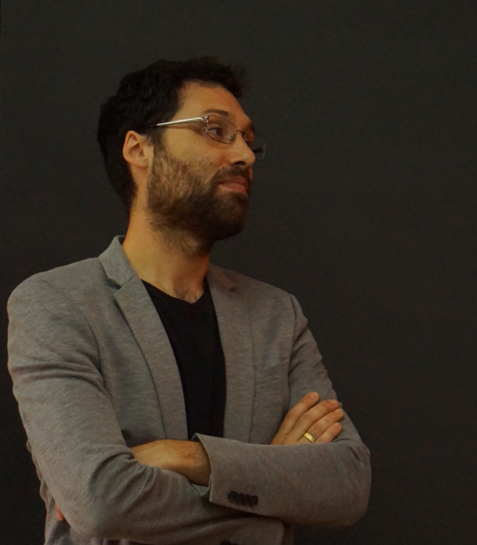

Introduction
Hello, my name is Pablo Huijse Heise and this is my personal website. It hosts a short bio, selected educational material and a couple of pictures. For more about my professional activities and skills please see my full CV, research statement and workera.ai certificate.Short bio

Pablo was born in Valdivia, Chile in 1985. He received his B.Sc. and P.E. degrees in Electrical Engineering from the Universidad de Chile in 2009. He received his PhD degree in Electrical Engineering from the Universidad de Chile in 2014. In 2015-2017 he was a postdoc at the Millennium Institute of Astrophysics (MAS). Since 2018 he is a young researcher at MAS and an assistant professor at the Informatics Institute, Universidad Austral de Chile. He also participates in the ALeRCE project. His research is about computational methods to analyze astronomical data and his areas of expertise are machine learning, deep learning, bayesian inference, statistical signal processing and information theory.
On a more personal note when can say that he is not very good at sports, but he runs pretty fast and swims like a fish. He trusts in his cooking skills and he is bit obsessed with specialty coffee. He enjoys having long talks and playing PC videogames with his brother. He loves his wife very much.
On a more personal note when can say that he is not very good at sports, but he runs pretty fast and swims like a fish. He trusts in his cooking skills and he is bit obsessed with specialty coffee. He enjoys having long talks and playing PC videogames with his brother. He loves his wife very much.
Selected educational material
- Book on Bayesian Learning and Deep Neural Networks
- Book on Supervised Learning (in spanish)
- Book on Python for data science and scientific computing (in spanish)
- Book on Monte Carlo methods (in spanish)
- Lectures on Artificial Neural Networks (2020) and associated slides
- Slides for "Deep learning for astronomical time series", keynote at LACCI 2021
- Slides for "AI y redes neuronales artificiales", a talk I've given at secondary schools in Valdivia, Chile